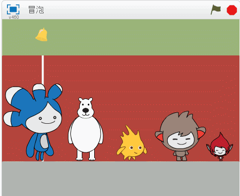
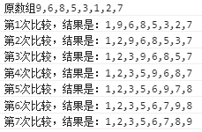
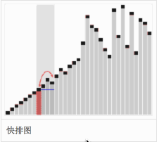
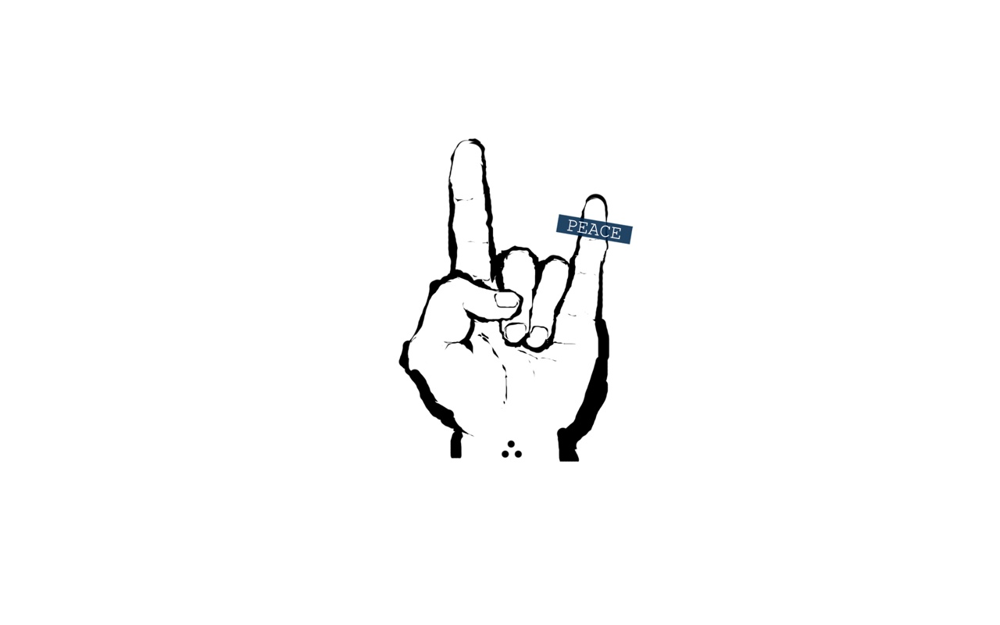

说说js中的三种简单的排序方法
sort()
冒泡排序(Bubble Sort)
快速排序
sort()
js中内置的函数,默认的排序规则是这样的
按字母顺序对数组中的元素进行排序，说得更精确点，是按照字符编码的顺序进行排序来自W3school
但是我们现在想对一个数组内的数字按从小到大进行排序，这时候就要提供比较函数，sort(function(a,b){})
a和b这两个参数的比较规则是这样的
- 若 a 小于 b，在排序后的数组中 a 应该出现在 b 之前，则返回一个小于 0 的值
- 若 a 等于 b，则返回 0
- 若 a 大于 b，则返回一个大于 0 的值
1 | var arr = [9,6,8,5,3,1,2,7]; |
JavaScript sort() 方法非常简单，上手即用原理在JaveScript高级程序设计一书中有详细的解释
冒泡排序
冒泡排序是比较经典的排序方法了
原理：比较两个相邻的元素，将值大的元素交换至右端，如下图(来源)

思路：依次比较相邻的两个数字，较小数则提前。即在第一次比较时，比较第1个和第2个数字，小的数字将被提前。然后比较第2个和第3个数字，小的数字将被提前，大的数字放在后面，如此重复比较，直到比较最后两个数字，小的数字提前，大的数字放在后面，得到一个新的数组，然后在进行第一次比较步骤，直到所有数字都按从小到大的顺序排序完成。
1 | var arr = [9, 6, 8, 5, 3, 1, 2, 7]; |

试一下
快速排序
介绍一种比较简单的快速排序方法
原理：选择数组的第1个数字作为中间数，与其他的数字进行比较，比它小的数字放在它的左边，比它大的数字放在它的右边，依次比较到排序完成

思路：先取出数组中的第一个数字作为中间数，新建一个名为small的空数组用来存放小于中间数的数字，新建一个名为big的空数组用来存放大于中间数的数字。遍历整个数组并开始比较。具体实现看代码。
1 | var arr = [9,8,7,6,5,4,3,2,1]; |
End
简单介绍了一下三种排序算法，在复习js的过程遇到这类问题，贴在这里也是复习了
